Visualization Gallery
Explore geometry, materials, coupled bodies, pressure fields and scattering patterns. Click any figure to enlarge it, or open its short, runnable Julia example.
{kind=link}
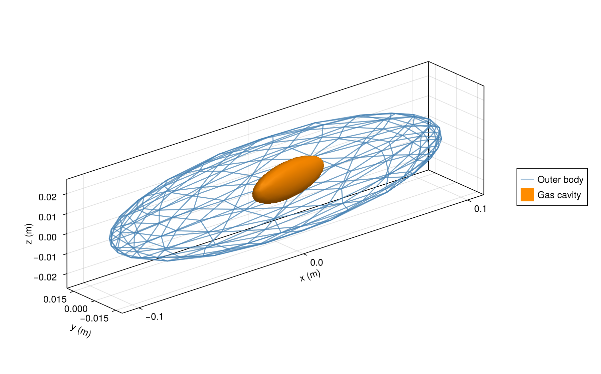
See inside a coupled body
A complete translucent mesh reveals an offset gas cavity.
{kind=link}
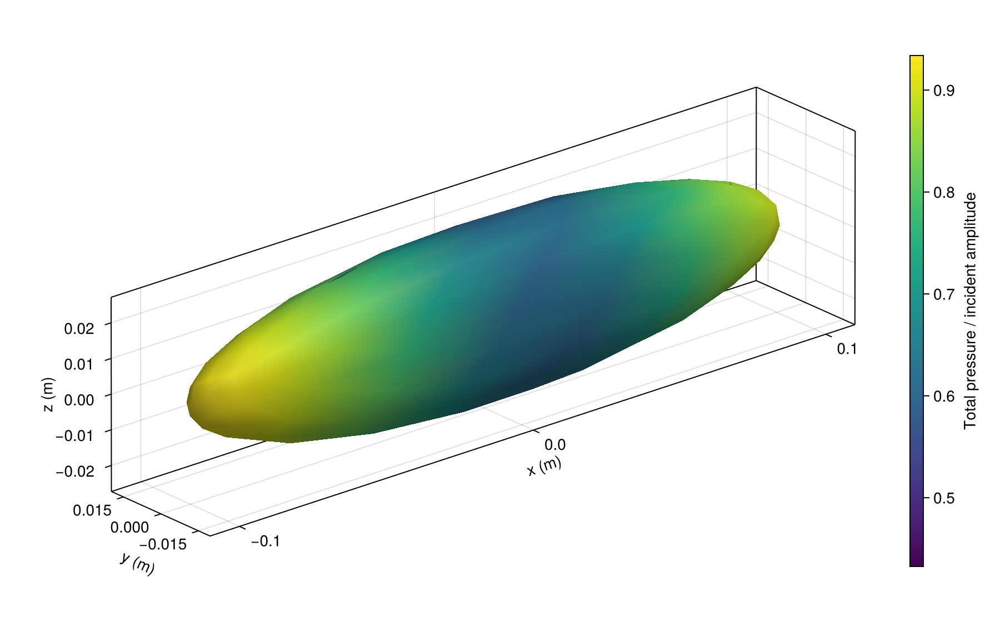
Pressure on a coupled body
Total pressure on the outer surface includes the cavity's influence.
{kind=link}
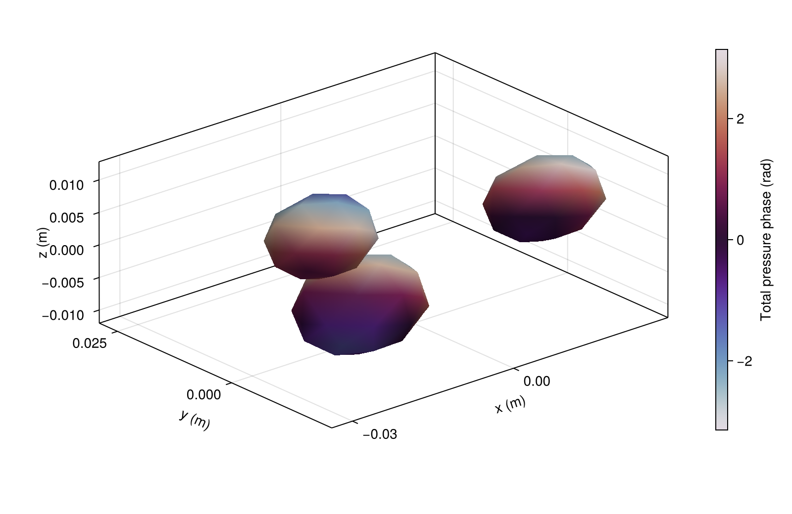
Multiple scattering
Pressure phase across three interacting particles under oblique incidence.
{kind=link}
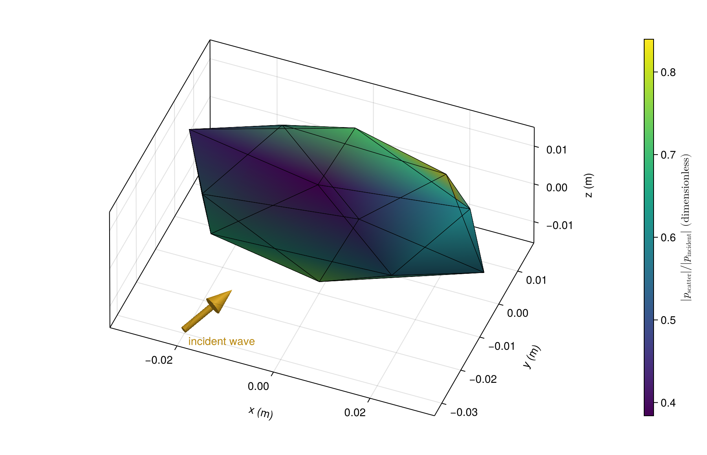
Bring your own mesh
Scattered-pressure magnitude on a supplied faceted body.

Two internal gas cavities
Different cavities share one enclosing body and one coupled solution.
{kind=link}
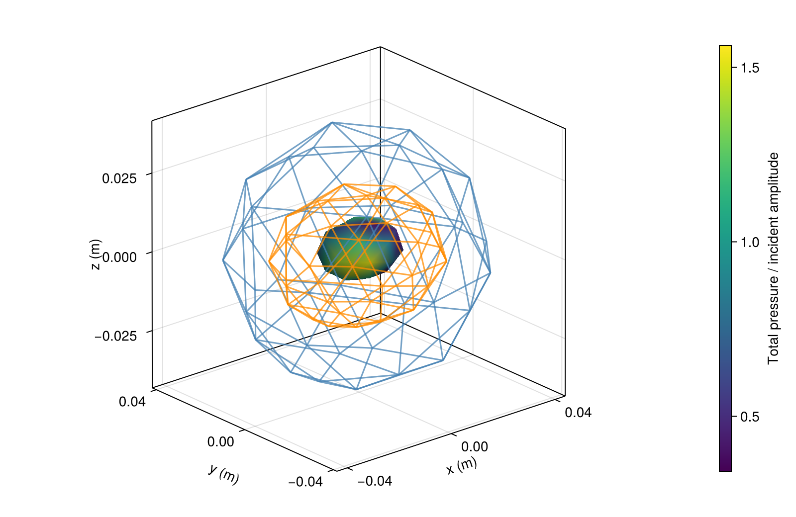
Nested fluid regions
Inspect an offset core through two complete enclosing interfaces.
{kind=link}
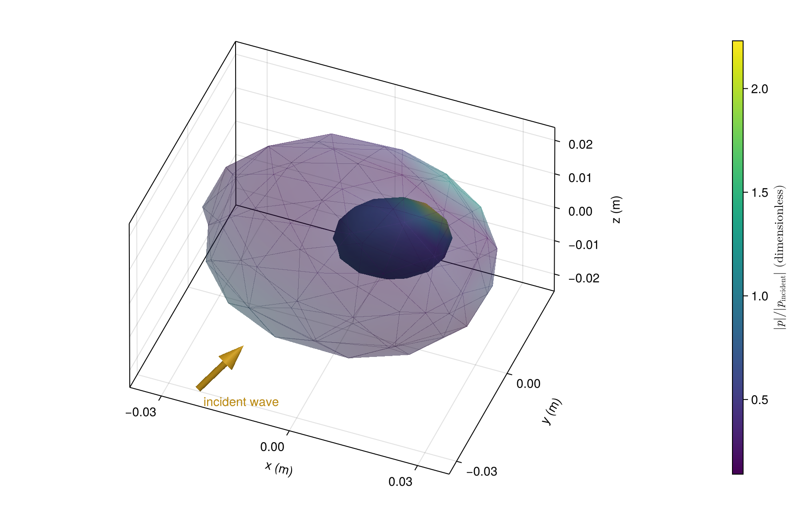
An off-center inclusion
Pressure on a displaced inclusion inside a spherical body.
{kind=link}
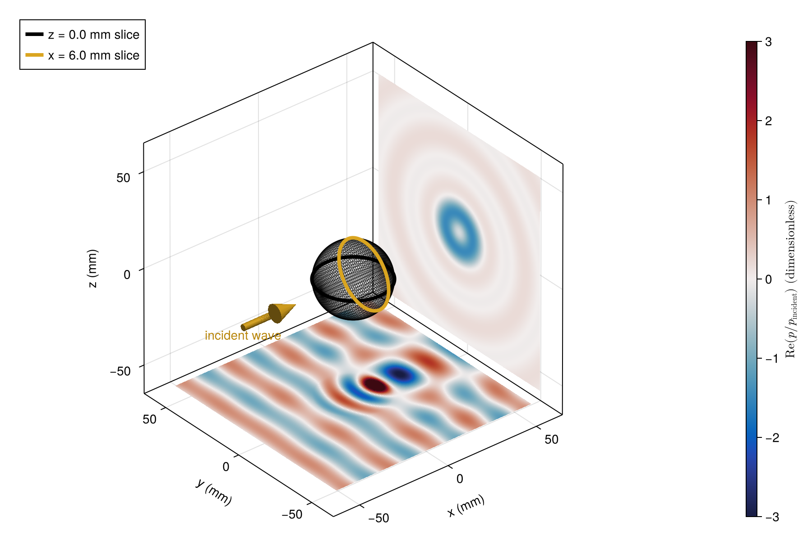
Pressure fields in 3D
Intersecting slices reveal transmitted and scattered waves.

Phase on a curved body
A closed bent surface, colored by scattered-pressure phase.
{kind=link}
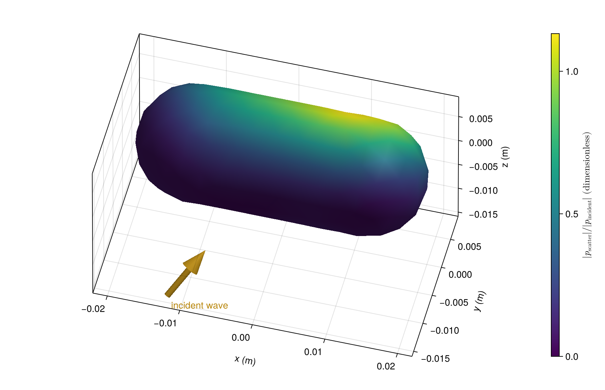
Closed fluid cylinders
Surface pressure at oblique incidence, including rounded ends.

3D scattering lobes
Radius shows relative amplitude; color shows directional target strength.

Every observation direction
A single solution becomes a complete angular scattering map.
{kind=link}
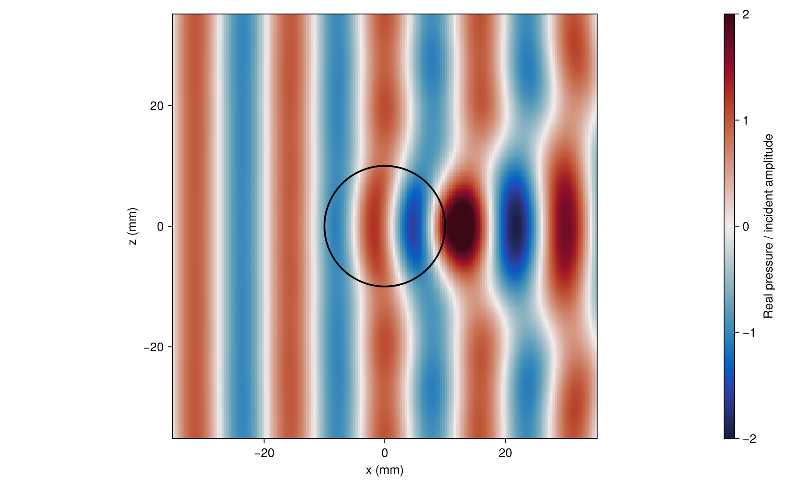
Inside and around a particle
See transmitted waves and exterior interference in one slice.
{kind=link}
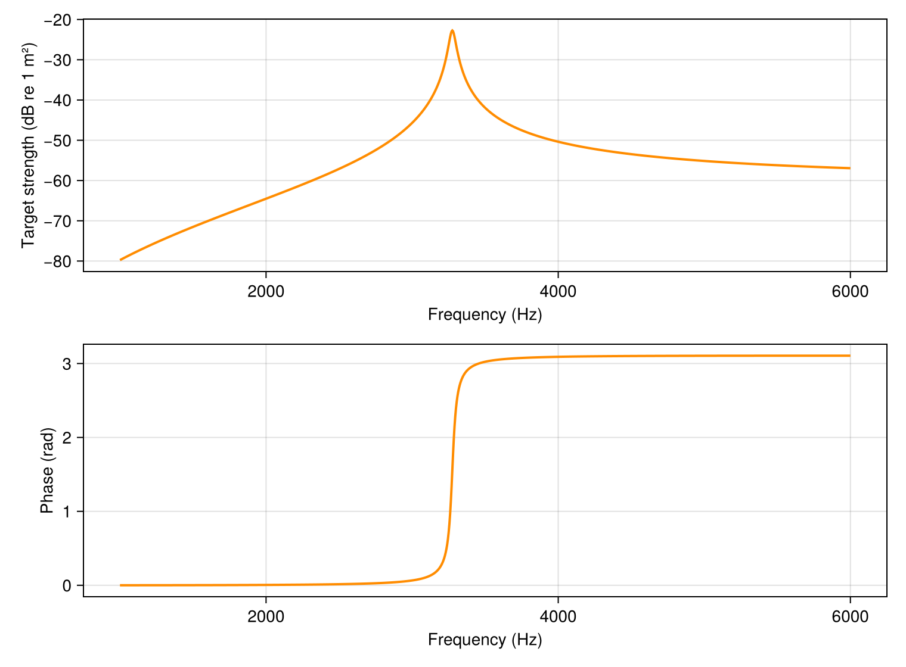
Bubble resonance
Track a gas bubble's resonance in target strength and phase.
{kind=link}
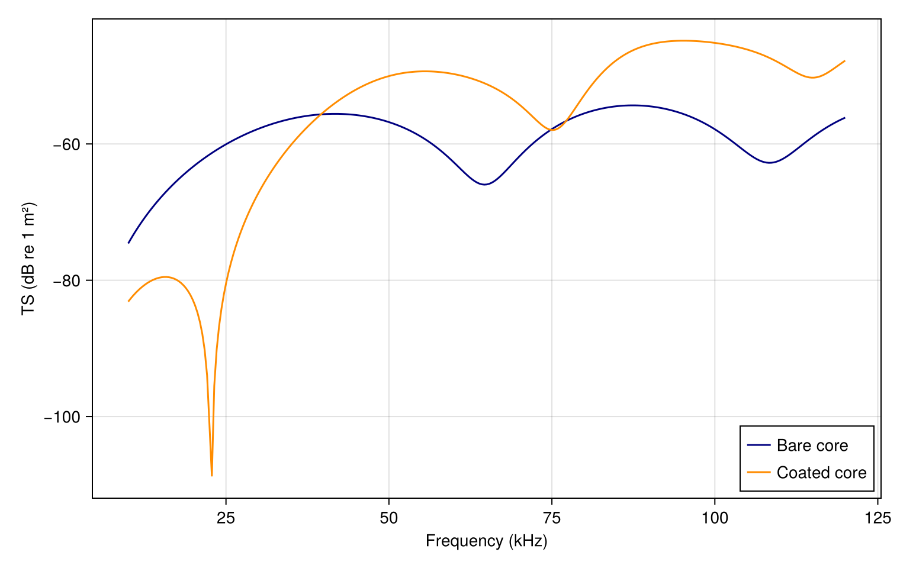
Add a coating
Keep the core fixed and explore what its surrounding layer changes.
{kind=link}
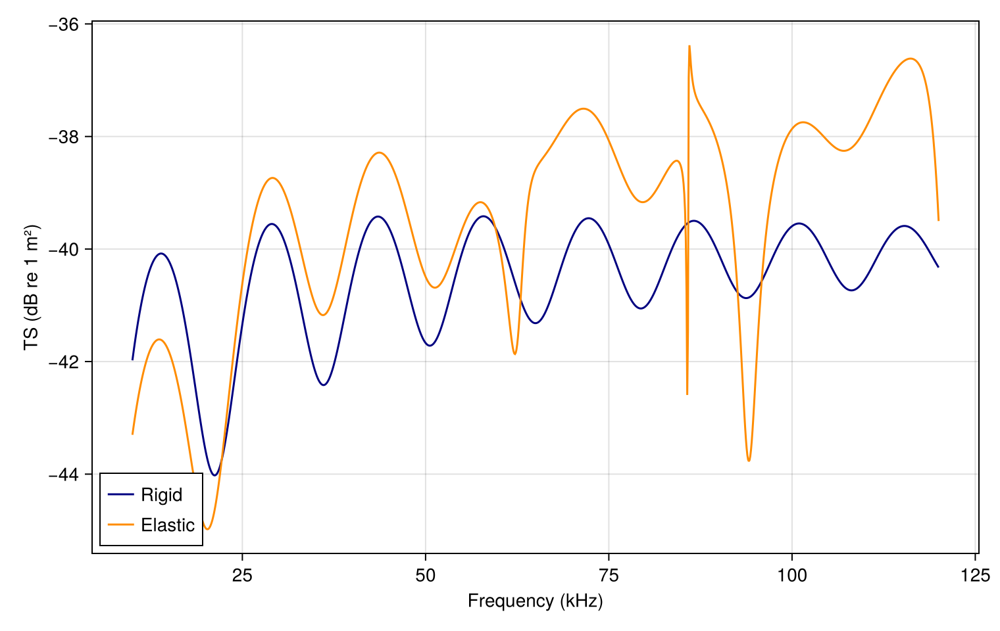
Elastic resonances
Rigid and elastic spheres reveal very different spectra.